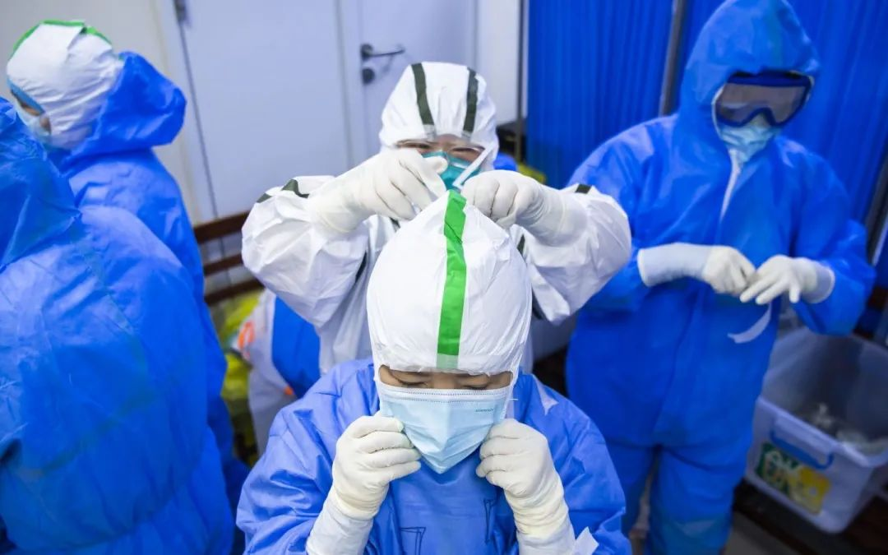

湖北换帅：抗疫迎来大考
原文链接 备份链接 对应勇和他的新搭档们而言，他们的大考才刚刚开始1月20日，在上海市人民政府的记者招待会上，上海市市长应勇在回答记者提问时表示，上海高度重视新型冠状病毒肺炎防控工作，加强了对一些可疑病例的甄别和筛选，对一些可疑病例人 …

一整套“战时”防控模式，在武汉这场“保卫战”中迅速成形。
全文7027字，阅读约需14分钟
点击下图进入阅读新京报特别策划

*新京报记者 邓琦 沙雪良 摄影记者 陶冉 郑新洽 编辑 张畅 校对 吴兴发*
叶青站在窗边，听不到车流声。
在武汉生活40年，他第一次感觉这座城市冰冻住了，像忽然一场大雪，把这里彻底掩埋，异常安静。
至2月23日，湖北省统计局副局长叶青的《疫区日记》，写到了第30篇。
时间回到30多天前，叶青感受到了武汉市民的“真正紧张”。新成立的疫情防控指挥部凌晨至深夜连发五道通告，宣布关闭离汉通道，武汉“封城”。
始于2019年末的新冠肺炎疫情，令武汉这座历史可以上溯3000年、人口规模1100余万的中部重镇，骤然面临新中国城市治理史上前所未见的挑战。
此间，武汉火线换帅，提拔问责并行。系列防控手段实施，全国各方力量驰援。2月20日，中央指导组成员、国务院副秘书长丁向阳在发布会上指出，总体上看，湖北省、武汉市的疫情从过去的爆发式增长已经走向趋缓。
“如果防控措施落实到位，下降的趋势不会改变，从前期的最高点开始逐步下行。”这是中央指导组对湖北、武汉疫情的最新判断。
 ▲1月23日4时35分，武汉天河国际机场，旅客在人工柜台前排起长队。当日10时起，武汉公交地铁暂停运营，机场火车站离汉通道暂时关闭。摄影/新京报记者 郑新洽
▲1月23日4时35分，武汉天河国际机场，旅客在人工柜台前排起长队。当日10时起，武汉公交地铁暂停运营，机场火车站离汉通道暂时关闭。摄影/新京报记者 郑新洽
━━━━━
史无前例的“封城令”
“看来这一次不是闹着玩的。”1月23日，在武汉生活了40年的湖北省统计局副局长叶青，提笔写下第一篇《疫区日记》。
早上6点半一醒来，叶青就在微博上转发了武汉“封城”的消息。这位连续呼吁公车改革，被称作“中国最个性官员”的他，真正感受到了武汉市民的紧张。
当天凌晨两点，武汉市新冠肺炎疫情防控指挥部发布第一号通告，宣布自1月23日10时起，全市城市公交、地铁、轮渡、长途客运暂停运营；无特殊原因，市民不要离开武汉，机场、火车站离汉通道暂时关闭。
武汉市民危光没有感到意外。那几日，关于疫情的新闻报道已是密集而至。1月20日晚，钟南山明确了新冠肺炎“人传人”；1月22日一天湖北新增病例69例，其中武汉就有62例，死亡8例。
“封城”，是武汉疫情防控指挥部成立后，发出的第一号通告。武汉市长周先旺对此解读称，是为切断感染源，防止疫情向全国蔓延。
在中部六省中，武汉是唯一的副省级城市，是我国内陆重要的水陆空交通枢纽，高铁网辐射大半个中国，素有“九省通衢”之称。武汉也是我国中部航空枢纽，有国际航线50余条，是华中地区唯一可直航五大洲的城市。
中国铁路武汉局发布的数据显示，武汉“封城”前一天，近30万人次通过铁路离开这座城市。其中，与被推断为此次病毒发源地的武汉华南海鲜市场一街之隔的汉口火车站，发送旅客接近16万人次。
据不完全统计，1月23日0时-10时，从武汉发出可抵达大中城市的列车至少有251列，沿着武汉“米”字形轨道交通网，开往全国各地。
当天凌晨至深夜，指挥部5道通告连续发出。
二号通告称，武汉市大宗商品、食品、医疗防护用品等储备充分、供应顺畅。请广大市民不用恐慌，不必囤积。三号通告中，武汉紧急求援，开通了24小时电话接收社会各界关于抗击疫情的医用耗材、防护用品等物资的爱心捐赠。四号通告公示了捐赠详情。五号通告宣布：自1月24日12时起，武汉全市网约出租车停止运营，巡游出租车实行单双号。
危光分析了一下家里的处境，有些无措。
妻子需要定期服药，去哪里买？读研的孩子放假在家，一家三口每天消耗食材不少，如何保障？
危光平日承担家庭采购任务。“封城”前，他隔三差五去一趟超市，超市里人挤人，让人发怵。1月25日大年初一，他从家里翻出些干红薯粉，一家三口煮了点儿吃。
“封城”后，危光大年初三、初六步行去超市买了菜，之后再没出过小区。他尝试让外地朋友给他快递一些经放的食材，比如萝卜、土豆，由于交通管制，没能成功。
 ▲1月27日，北京首都国际机场，援鄂医疗队队员登机前合影。摄影/新京报记者 陶冉
▲1月27日，北京首都国际机场，援鄂医疗队队员登机前合影。摄影/新京报记者 陶冉
▲1月29日凌晨，武汉雷神山医院工地，工人正加班加点施工。摄影/新京报记者 陶冉
━━━━━
停不下的医院
“都停摆了。”叶青说，一个城市可以很喧嚣，也可以很安静。在这个特殊时期，只有停下来，才能渡过难关。
但医院停不下来。
武汉市有61家医疗机构设发热门诊，所有社区卫生服务中心都有发热诊室，可开展发热病人的筛查和鉴别诊断。
由于发热病人剧增，一床难求，很多发热门诊超负荷运转。众多发热病人涌入医院彻夜排队，成为潜在传染源。
传染病需要专门的医院收治。之前武汉市专门的传染病医院仅两家，武汉市金银潭医院、武汉市肺科医院，共900多个床位。
为了争分夺秒收治患者，1月底，武汉市在早期两家定点医院和61家发热门诊的基础上，分三批征用24家综合医院，参照感染性疾病防治机构的基本要求，临时改造成为发热病人收治医院。
床位还是不够，加上最初缺少试剂盒和检测速度慢，不少患者没来得及确诊就去世了。
1月24日、25日两天，武汉市决定参照北京小汤山医院模式，建造武汉火神山和雷神山医院，以加大救治患者力度。两个医院加起来，解决2600张左右的床位。
1月27日，时任武汉市委书记马国强在新闻发布会上给出一组数据：自疫情发生以来，武汉发热门诊量逐日增多，往年这个季节，全市发热门诊量每天大体在3000例左右，而在过去几天里，高峰时段到发热门诊就诊的人数超过15000人次，在接诊量瞬时增加的情况下，发热门诊确实是在超负荷运转，出现了大量人员排队问题。
患者暴增导致医疗物资更为紧缺。
近日，武汉市第一医院副院长陈国华接受新京报采访时表示，刚开始物资是最头疼的事儿，大年三十之后那几天，每天防护用品都告急，而且那会儿是病人最多的时候。“那几天晚上我从医院出来，感觉非常焦虑、无助，也心疼医务人员。他们每天十几个小时在这里工作，还不能回家，我作为管理者，连自己员工的生命安全都保证不了，我怎么跟他们交代？”
大年三十晚上，陈国华吃完盒饭，就跟大家讨论还有多少口罩、多少防护服，还能维持多少天。他每天不停地给指挥部打电话，从社会各种渠道去搞防护服、口罩，也发起爱心募捐。
防护物资稀缺，是武汉各家医院面临的窘境。有医务人员表示，穿上防护服就不敢脱，脱了可能就没有了。一旦穿上，意味着一直到全天工作忙完，都裹在防护服里透不过气。
医护人员感染的风险也在加大。1月21日凌晨，武汉市卫健委首次通报，全市15名医务人员确诊，另有1名疑似病例。截至2月11日24时，武汉市报告医务人员确诊病例已达1102例，数位医务人员以身殉职。
马国强曾谈到医护人员物资短缺问题，称口罩因为春节停工等原因，造成阶段性紧张。他把防护服列为最紧缺资源，他当时认为，随着开工率提高和采购范围将扩大，渠道将拓展。
来不及等政府调配，不少医院在网上发起爱心募捐。
随着各地纷纷支援湖北，大量社会物资涌入，红十字会卷入舆论漩涡。公众质疑，湖北和武汉红会物资分配不公、调配效率低下，后者还卷入了“专卖山东捐赠武汉蔬菜”、收取服务费等事件。
1月31日，马国强接受央视专访时称，这一段时间自己内疚、愧疚、自责。“我一直在想，如果我早一点决定，采取像现在严厉的管控措施，结果会比现在要好，对全国各地的影响会小，也会让党中央、国务院少操心。”
 ▲2月8日，武汉协和医院西院，北京朝阳医院援助武汉医疗队和远在北京的同事进行医疗会诊。摄影/新京报记者 陶冉
▲2月8日，武汉协和医院西院，北京朝阳医院援助武汉医疗队和远在北京的同事进行医疗会诊。摄影/新京报记者 陶冉
━━━━━
“打法变了”
2月13日，湖北省卫健委数据显示，由于统计口径变化，2月12日湖北省新增新冠肺炎病例14840例(含临床诊断病例13332例)，其中武汉市新增13436例，单日新增病例首次破万。
就在这一天，湖北“换帅”。
应勇出任湖北省委委员、常委、书记；王忠林任湖北省委委员、常委和武汉市委书记。公开履历显示，应勇和王忠林均有多年政法系统工作经历。
早几天，国家卫健委副主任王贺胜“空降”湖北任省委常委，随后兼任湖北省卫健委党组书记、主任。王贺胜学医出身，曾在天津卫生系统任职多年，经验丰富，目前在国家卫健委四位副主任中排名第一。
“懂医的终于来了。”叶青看到“王贺胜任湖北省委常委”这一消息时感叹。
不到一周，湖北省委领导班子迎来三位省外“新人”，调整涉及疫情防控重中之重的湖北和武汉、具体负责湖北省疫情防控工作的省卫健委。
新领导到任后，武汉疫情防控节奏明显加快。
新上任的湖北省委书记应勇第一时间主持召开专题会，提出要抢抓重要窗口期，紧抓救治和阻隔两大关键环节。“救治”“阻隔”的四字提法，有媒体评价为“打蛇终于打到七寸”。
新任武汉市委书记王忠林在医院、社区、超市等地调研，发现一些小区防控流于形式，有些地方拉网式排查大而化之。他宣布启动三天集中拉网清底大排查。“这件事不能再等了！”
在此之前，武汉因排查“网眼太大”备受舆论质疑。马国强一周前发布了“户数排查百分比达98.6%”的统计数字，一些武汉网友却称，至今没有人对自家排查检测。不少“入院难”的求助帖，不断在微博等社交媒体发布。
新官上任的王忠林，烧起了大排查的“火”。他说，只有找到人、查到人，才能落实“应收尽收”。不摸清底数，这场战“疫”就很难打赢。“武汉是决战之地，要集中力量打歼灭战，而不是松松垮垮打持久战。”
王忠林提出，要求以社区为基础，利用人工和大数据相结合，彻底排查清底“四类人员”。坚持“不漏一户、不漏一人”。
三天大排查期间，王忠林再次暗访多个社区。2月18日，他去了曾办“万家宴”的百步亭。2月19日，他现场部署：各区要作出承诺，确保没有居家的确诊和疑似病人，“不能不当回事，人命关天，如果再发现一例，就拿区委书记、区长是问。”
3天拉网式大排查交出了答卷。2月23日消息显示，大排查中武汉警方协助排查、转运、送治“四类人员”3502人，包括确诊患者559名、疑似患者820名、发热患者283名、密切接触者1840名。
一系列雷霆手段，让武汉人看到了希望。
“我觉得这可以说是武汉模式。”叶青说，王忠林书记到武汉后，全市拉网式排查非常有效，如果能提前些做，可能现在的封控措施基本结束了。
更多市民看到了武汉在疫情防控各方面的变化——“武汉的打法变了。”
▲2月2日，武汉协和医院西院，医护人员互相帮着穿上防护服。摄影/新京报记者 陶冉
━━━━━
全面升级的防控
一整套“战时”防控模式，在武汉这场“保卫战”中迅速成形。
这之前，武汉防控疫情的方略，包括城市的防控措施、医疗救治能力、对“四类人员”的排查和收治等，数次受到批评。
国家卫健委医政医管局官员曾表示，武汉疫情持续时间比较长，由于防控措施没有及时到位，很多社区病例没有得到及时救治。重症病例从发病到住院平均9.84天，这10天错失最佳时机，等待过程中由轻症变重症。
中央指导组副组长、中央政法委秘书长陈一新曾指出，武汉在疫情防控中对感染者底数还没有完全摸清，蔓延扩散的规模也没有较为精准的估计预测。
对于患者转运，特别是转运重症患者过程中，武汉还出现了衔接无序、组织混乱，导致群众严重不满等问题。武汉市武昌区、江汉区以及湖北省和武汉市卫健委的部门负责人，被中央指导组约谈。
尽管早在1月23日就宣布“封城”，但多位武汉市民提到，之后的20多天，街上、超市里，仍可见人头攒动，市民排队购物的情景。
湖北新书记应勇将“阻隔”列为和“救治”并重的关键环节之后，武汉宣布实施更严格的小区封闭管理。叶青看到，武汉的社区除了特定人员，都禁止出入，大家也不能在小区散步，一天比一天严。原来，他们可以去超市采购，2月15日开始，只能通过电商配送，物品送到后自己下楼取。
王忠林还提出，武汉要实现“五个百分之百”——“确诊患者百分之百应收尽收、疑似患者百分之百核酸检测、发热病人百分之百进行检测、密切接触者百分之百隔离、小区村庄百分之百实行24小时封闭管理”，坚决遏制疫情扩散蔓延。
武汉还通过提拔与问责，不断调整“战将”队伍。
截至2月21日，武汉已火线提拔干部20名、火线发展党员34人；纪检监察机关共查处问题385个、问责处理620人，涉局级干部6人、处级干部127人。
武汉市民明显感受到了变化。
土生土长的武汉人金娜说，这场疫情像和平年代突临战乱，让人猝不及防。前期信息不透明，大家没对疫情引起重视。如今一系列大动作启动，人们感觉比较安心。
她的同学刘夏还关注到，政府政策愈发细致和民生，逐渐出台了一些对居民的便利政策，比如新增定点药店，方便重症慢病患者购药。武汉卫健委公布了部分接诊非新冠肺炎患者的医疗机构，满足慢性重症患者、孕产妇、儿童等医疗需求。
 ▲一位市民成为火神山医院工地的摆渡志愿者，一天在工地和停车点间往返百余次，送建设工人回驻地。摄影/新京报记者 陶冉
▲一位市民成为火神山医院工地的摆渡志愿者，一天在工地和停车点间往返百余次，送建设工人回驻地。摄影/新京报记者 陶冉
 ▲除夕夜（1月24日），数百位武汉酒店业内人士自发组建武汉医护酒店支援联盟，为一线医护人员提供免费和方便的住宿。图为志愿者配送消毒水到联盟酒店。受访者供图
▲除夕夜（1月24日），数百位武汉酒店业内人士自发组建武汉医护酒店支援联盟，为一线医护人员提供免费和方便的住宿。图为志愿者配送消毒水到联盟酒店。受访者供图
━━━━━
来自八方的支援
疫情的危境之中，民间也在自救。
金娜年前从武汉飞往韩国首尔。受疫情影响，改签5次机票后，2月4日，顺利从首尔飞往珠海暂住至今。
回不去的武汉，成了她的惦念。
看到武汉“封城”，确诊人数一天天上升，金娜很着急，想帮家乡做点事情。后来，她加入武汉大学新闻传播学院同学发起组建的救援团，帮助民间和湖北各地医院对接物资信息。该团已协助各地爱心人士，将4000只护目镜、51万余副医疗手套和8000个KN95口罩捐赠至湖北几十家医疗机构。
“家乡的每个人都在自己的位置上，尽力帮到更多的人。”金娜说。
民间的自发救助行为在各个领域涌现。为给奋斗在抗击疫情一线的医护人员提供免费和方便的住宿，除夕夜（1月24日），数百位武汉酒店业内人士自发组建武汉医护酒店支援联盟。截至1月30日21时，联盟合计为6056位医护人员提供超4万个间夜的住宿。
联盟第一发起人、酒店业主肖雅星说，当时的想法很简单。医护人员太辛苦，很多住得远，交通又不方便，一般的酒店可能担心风险不让他们入住，还有很多酒店又处于停业状态。自己的酒店当时空着，就想着拿出来给医护人员住。
“我们是值得被大家记住的集体。”肖雅星认为，只要加入联盟，就是提供了爱心。
另一发起人李超说，成立联盟，是一群人干了一件良心事。
刘夏是一位民宿老板，他也加入了武汉医护酒店支援联盟。至2月22日，民宿已为51位医护人员提供600多个间夜的住宿。
还有普通市民自发组成志愿者车队。他们佩戴口罩、随身带着消毒液，借助打车平台免费接送一线医护人员上下班。
疫情之下，买药变得困难，不少武汉市民自发加入到为患者免费送药的行动中。医院人手告急，很多环卫工人开始忙碌在武汉市的各家定点医院和方舱医院里。
还有人，成为火神山的摆渡志愿者，一天在工地和停车点间往返百余次，送建设工人们回驻地。
更多人开始关注疫情背后的“心理”问题。
疫情期间，武汉、江苏、贵州、河南、北京、上海等地多家心理咨询机构、心理咨询师协会，以及高校心理学院纷纷开通援助热线，为武汉及全国各地提供心理援助。
危光不担心买菜的问题了。小区里来了志愿者，每天，居民把采购需求发到微信群，志愿者代为采购，再统一送到小区，相当于团购。
 ▲2月13日，武汉协和医院西院，4名确诊患者出院，其中一名患者跳起舞蹈。摄影/新京报记者 陶冉
▲2月13日，武汉协和医院西院，4名确诊患者出院，其中一名患者跳起舞蹈。摄影/新京报记者 陶冉
━━━━━
只盼再吃碗热干面
“非常之治”收到了正向成效。
2月20日，中央指导组成员、国务院副秘书长丁向阳在武汉参加国新办发布会时指出，总体上看，湖北省、武汉市的疫情从过去的爆发式增长已经走向趋缓。“如果防控措施落实到位，下降的趋势不会改变，从前期的最高点开始逐步下行。”
2月22日，国家卫健委数据显示，武汉、湖北其他地市、全国其他省份现有确诊病例数，均呈现下降趋势。其中，武汉从2月18日的峰值38020例持续下降至2月21日的36680例。
武汉作家方方评价，新的主政领导到来，“湖北的抗疫方式一改前面的拖沓和低能。疫情局势在大刀阔斧中，明显扭转。”
复工、回乡，武汉市民开始有了新的盼望。
作为民宿经营者，刘夏的心态被一次次推迟的复工时间弄得很焦虑。他本做好了2月20日复工准备，打算一复工就去银行贷款，缓解资金流压力，没想到，又推迟了。
最近，刘夏跟其他几个酒店联合，被政府有偿征用，接待外地支援武汉的部分医务人员，稍微缓解下经营压力。他还打算找房东和员工商量，能否减房租、调薪资，降低成本。他开始给员工培训，让大家做好随时复工准备，并交流复工后卫生、消毒流程。他估计，3月武汉可能会阶段性恢复一些社会活动，比如交通和一些必要的企业、单位。“我们中小企业都扛不住了，人的精神也到了临界点。”
叶青很关注疫情对经济的影响，尤其不太富裕的人群，现在面临困境。他建议，政府提供志愿者岗位和补贴，帮他们渡过难关。“经此一疫，我们要反思：今后除了发展经济，还要保护环境、保护健康。我们分管卫生的副省长、卫建委主任应该学医、懂医。要建立一个全面的应急系统，在北上广、武汉、成都等重要节点城市部署公共卫生安全应急基地，可以快速处理周边疫情。另外，应设置应急资源储备，包括口罩、护目镜等。”
金娜看到，有专家说新冠病毒未来可能与人类长期共存。她想起《鼠疫》中一段话：鼠疫杆菌绝不会完全死亡或消失，它们能够在家具或衣物里休眠数十年。等候着冥冥中的指令或人类的不幸，到那时，鼠疫将再次唤醒它的鼠群，送它们去某座幸福的城市撒播死亡。
“人类应该反思。”金娜说。
形势依然严峻，金娜短期内还回不了武汉。政府仍在扩建方舱医院，确诊数字依然高位。但金娜看到了希望。她盼着疫情早日解决，想着自己5月能否回武汉。
她计划，回武汉第一件事，就是跟亲戚朋友聚聚，抱抱他们。还有，再吃碗热干面。
（文中危光、刘夏、金娜均为化名）
*新京报记者 邓琦 沙雪良 摄影记者 陶冉 郑新洽 编辑 张畅 校对 吴兴发*
点击下图进入”全国新型冠状病毒感染肺炎实时地图“

*值班编辑 吾彦祖*


本文未经新京报书面授权不得转载使用
欢迎朋友圈分享

原文链接 备份链接 对应勇和他的新搭档们而言，他们的大考才刚刚开始1月20日，在上海市人民政府的记者招待会上，上海市市长应勇在回答记者提问时表示，上海高度重视新型冠状病毒肺炎防控工作，加强了对一些可疑病例的甄别和筛选，对一些可疑病例人 …
原文链接 备份链接 点击上方蓝字 _ 关注我们 _ 非常时期，武汉成了全国人民挂念、祈福的城市。封城后，武汉人民的真实生活是什么样？ 正和岛自1月26日起特别推出《叶青：我在武汉疫区的第N天》专栏。叶青是一位定居武汉40年的市民，也是一名 …
原文链接 备份链接 【财新网】（记者 张帆）1月24日中午12点左右，作为疫情爆发中心地的湖北省姗姗启动重大突发公共卫生事件一级响应。而在此之前，从1月23日起，已有浙江、广东、湖南、北京、上海、天津、安徽、重庆、四川等多个省份启动一级 …
原文链接 备份链接 武汉各大医院发热门诊的紧张态势已有一周，七家定点医院启动才两天已被压到极限。 武汉不缺顶级医院，不缺顶级专家，不缺顶级医疗能力，缺的是公共卫生防控能力、行政效率和疫情处理流程。 在患者和大医疗机构之间，未见到基层 …
原文链接 备份链接 ********** *****他们很想回家，和孩子最近一次见面还是暑假。但谁也不敢回去。“万一有什么事，也不能把病毒扩散到别处，是不是？” ***** 6时35分，汉口站广场上，一队警务人员正在开会。 新京报记者 …